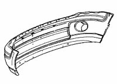
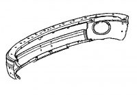
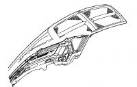
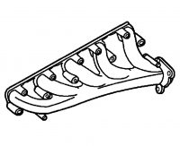
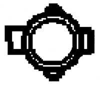
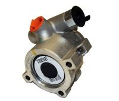
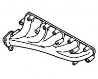
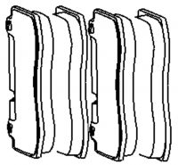

SRT10 Ram Truck
18 parts
2003 - 2006 Dodge Viper SRT10 Power Steering Pulley - 5290139AB
Part # 5290139AB
$242.00

2003 - 2006 Dodge Viper SRT10 Power Steering Quick Connect Fitting - 52088914AA
Part # 52088914AA
$75.00

2003 - 2006 Dodge Viper Valve Spring Retainer Lock 33003521
Part # 33003521
$3.00

Out of stock2004 - 2005 Dodge Ram SRT10 Front Fascia - 5030101AB
Part # 5030101AB
$415.00

Out of stock2004 - 2006 Dodge Ram SRT10 Bumper Beam - 55077960AC
Part # 55077960AC
$650.00

Out of stock2004 - 2006 Dodge Ram SRT10 Hood - 05029419AG
Part # 05029419AG
$1,125.00

2004 - 2006 Dodge RAM SRT10 Left Exhaust Manifold - 05037123AD
Part # 05037123AD
$149.00

2004 - 2006 Dodge Ram SRT10 Left Fog Lamp & Bracket - 55077475AE
Part # 55077475AE
$138.00
2004 - 2006 Dodge Ram SRT10 Left Headlight Assembly - 55077121AG
Part # 55077121AG
$270.00
 Out of stock
Out of stock2004 - 2006 Dodge Ram SRT10 Oil Cooler Inlet Line -05290411ab
Part # 05290411AB
$75.00
 Out of stock
Out of stock2004 - 2006 Dodge Ram SRT10 Oil Cooler Outlet Line - 05290410AB
Part # 05290410AB
$85.00

Out of stock2004 - 2006 Dodge Ram SRT10 Power Steering Pump - 5093985AA
Part # 05093985AA
$849.00
 Out of stock
Out of stock2004 - 2006 Dodge RAM SRT10 Power Steering Pump to Fan Line Assembly - 05290350AB
Part # 05290350AB
$145.00

2004 - 2006 Dodge RAM SRT10 Right Exhaust Manifold - 05037122AD
Part # 05037196AD
$300.00
 Out of stock
Out of stock2004 - 2006 Dodge Ram SRT10 Viper Powered Emblem - 05029627AA
Part # 5029627AA
$999.00

2005 - 2006 Dodge Ram SRT10 Front Brake Pad Kit - 05143402AB
Part # 05143402AB
$248.00
 Out of stock
Out of stockFalken Ziex S/TZ-04 - 305/40-22 - Set of Four for SRT Dodge Ram
$748.00

2003 - 2006 Dodge Viper Valve Spring Retainer Cap 05037754AA
Part # 05037754AA
$4.00